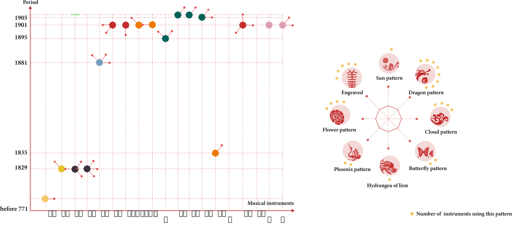

祭孔典礼在什么时候？
When is the ceremony to commemorate Confucius

The ceremony started at 3 am and lasted about 2 hours


祭孔音乐演奏规模
Performance scale
There were about 200 people participating in the ancient music performance. There were 64 dancers, 30 or 40 musicians, and 20 singers. The chief sacrifice officer who led the sacrifice was held by the county's chief executive, and the eight sub-sacrifice officers were held by the respected squires. The scale is magnificent and magnificent.
|
|
|
|


如何成为礼乐局的一员
How to become a member of the Rite and Music Bureau
|
1
Recommend
|
2
Test
|
3
Review
|
4
Admit
|
|
The Ritual and Music Bureau recruits new students every three years, with about sixty students each time. They are usually children of their own country and are recommended by local prestigious people. |
The examination includes visual inspection and composition. "Visual inspection" requires correct facial features, well-formed body, clear tongue, and pleasant sound. "Composition" requires that the freshmen have a certain level of education and understanding. |
In principle, all the students admitted are from the scholar's family. Even if other people are admitted, only the children of the scholars and farmers can be shortlisted. The rejected industry backgrounds are mainly prostitutes,jugglers, jugglers, hairdressers and waiters. |
Once admitted, they will be registered for life, and students will attend the sacrifice ceremony on time every year. |


祭孔音乐中的器物
Musical instruments during the ceremony
There are 98 instruments in 20 types and 146 instruments in 5 types. For backup and performance, two sets of music and dance equipment need to be copied. Here are 17 kinds of musical instruments and 3 kinds of dance equipment that can be verified in kind.
- A musical instrument called "gourd" in the Confucian Musical Instrument of Liuyang seen by Mr. Yang Yinliu in 1956
- Three new instruments added to the Confucian ceremony in the 1940s
- Fifteen ancient musical instruments used in the ceremony recorded in Volume 10 of Liuyang County Records


特钟
浏阳古乐中的特钟，是清代道光年间浏阳县一樵夫从深山挖掘所得，后被邱之稑采用编入浏阳古乐，从其形制、纹饰判断，应是一件西周早期的铜铙。
乐器材质类别
Classification of musical instrument materials
In ancient China, there was a method for classifying materials made of musical instruments, called the "eight-tone classification method." According to legend, there were 8 types of musical instruments such as "gold, stone, bamboo, cymbal, earth, wood, silk, and leather, etc." in the early Zhou Dynasty.

乐器的纹饰
Patterns of musical instruments
